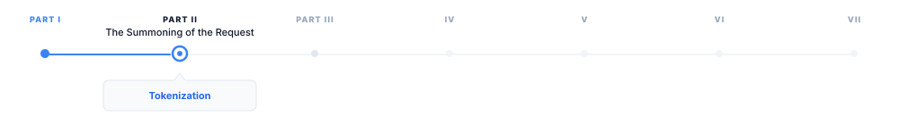
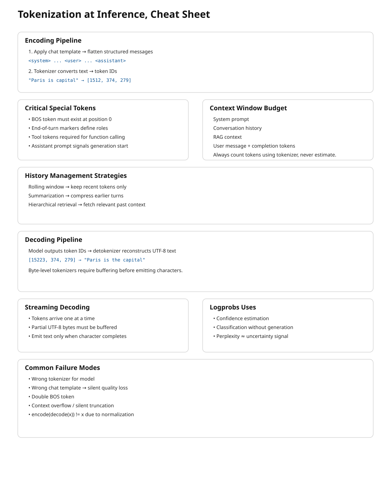

4 Tokenization
The canonical question for this chapter: A user sends a message while a model receive and returns numbers. How does text become numbers on the way in, and how do numbers become text on the way out?

The request has arrived at the inference server. Before the model sees a single character, the text must be converted to numbers. This chapter covers that conversion in both directions and describes everything that can go wrong in between.
4.1 Two tokenization chapters, two different problems
If you read the training section first, you have already seen tokenization as in a batch preprocessing environment which means a corpus is tokenized once, offline, before training begins. The vocabulary is fixed. The inputs are known and errors are caught early.
Tokenization at inference is a different story. It runs on arbitrary user input, in real time, and on every request. It supposed to handle every string a user might type which could be multilingual text, source code, emoji, adversarial inputs, or a combination of all four. The encoded output feeds directly into a running model. The decoded output appears on a user’s screen, sometimes token by token while they watch.
The concerns here are mostly operational, not theoretical. Understanding them is the difference between shipping reliable LLM applications or debugging corruption failures at 2am.
4.2 The encoding pipeline
When a request arrives, the first operation is encoding: converting the messages array into a flat sequence of token IDs ready for the model. This happens in two steps that are easy to confuse but are conceptually different.
4.2.1 Step 1: chat template application
The messages array has structure which includes roles, turns, and system prompts. The model has no concept of a dictionary. Before tokenization, the structured input must be flattened into a single string using a chat template.
Each model family has its own template. For LLaMA 3:
<|begin_of_text|>
<|start_header_id|>system<|end_header_id|>
You are a helpful assistant.<|eot_id|>
<|start_header_id|>user<|end_header_id|>
What is the capital of France?<|eot_id|>
<|start_header_id|>assistant<|end_header_id|>For Mistral:
<s>[INST] What is the capital of France? [/INST]For ChatML (OpenAI and many others):
<|im_start|>system
You are a helpful assistant.<|im_end|>
<|im_start|>user
What is the capital of France?<|im_end|>
<|im_start|>assistantThe special tokens (<|begin_of_text|>, <|eot_id|>, <|im_start|>) are part of the model’s vocabulary and were added during fine-tuning. The model learns to associate these markers with role transitions. Feeding the wrong template to the model causes it to sees an unexpected token sequence which in turn may cause the model to ignore the system prompt, and fail to complete the turn correctly, or produces outputs that look almost right but are systematically wrong in ways that can be hard to diagnose. This is one of the most common sources of bugs: no error is thrown yet the model just quietly misbehaves.
4.2.2 Step 2: token encoding
Once the flat string is constructed, the tokenizer converts it to integer IDs. This is a deterministic step in which the same string always produces the same IDs given the same tokenizer.
messages = [
{"role": "system", "content": "You are a helpful assistant."},
{"role": "user", "content": "What is the capital of France?"}
]
# Step 1: flatten with chat template
flat_string = apply_chat_template(messages, tokenizer)
# → "<|im_start|>system\nYou are a helpful assistant.<|im_end|>\n..."
# Step 2: convert to integers
token_ids = tokenizer.encode(flat_string)
# → [151644, 8948, 198, 2610, 525, 264, 10950, 17847, 13, ...]
# Step 3: pass to model
logits = model.forward(token_ids)The tokenizer runs on CPU and for typical prompt lengths it is fast enough to be negligible relative to model inference time. On the other hand, for very long prompts (100k+ tokens) it can become measurable and there are some inference frameworks that cache tokenized system prompts to avoid repeating this work on every request.
4.2.3 Special tokens that require explicit handling
Several special tokens need attention beyond the template:
Beginning of sequence (BOS). Many models expect a BOS token at position 0 and the tokenizer typically adds it automatically while some serving configurations require manual insertion. A missing BOS token causes silent quality degradation which means the model’s input distribution does not match training, and early tokens may be erratic.
End of turn markers. The template includes tokens marking the end of each turn and it must appear in the correct positions or the model misidentifies role boundaries.
Tool call tokens. Models fine-tuned for function calling have additional special tokens called tool call syntax. These must be in the tokenizer vocabulary and correctly placed in the template.
The generation prompt. The template typically ends with the opening of the assistant turn (e.g., <|im_start|>assistant\n) without closing it. This will signal the model that it should continue from here and omitting it causes the model to generate an incorrect turn structure.
4.3 Token continuation and context window management
The context window is the maximum sequence length the model can process in a single forward pass which is typically a range between 8k to 128k tokens for current models. Managing what fits in this window is a critical operational concern.
4.3.1 Count with the tokenizer, not your intuition
Token counts are not characters divided by four, or words divided by 0.75. They are the actual output of the tokenizer on the specific input string. Heuristics are inaccurate enough to cause real failures:
- Code tokenizes very differently from prose which means identifiers, operators, and whitespace have their own patterns
- Non-English text is often less efficient than English for most tokenizers
- Special tokens (role markers, tool tokens) add counts that character estimates miss entirely
Every production system that needs to stay within a context window must count tokens using the actual tokenizer, not an approximation:
import tiktoken
enc = tiktoken.encoding_for_model("gpt-4o")
def count_tokens(messages: list[dict]) -> int:
num_tokens = 0
for message in messages:
num_tokens += 4 # role, content, separators overhead
for value in message.values():
num_tokens += len(enc.encode(value))
num_tokens += 2 # reply priming tokens
return num_tokensThe exact overhead is varied by model and template. Always validate against the API’s reported token counts on a representative sample.
4.3.2 The context window budget
In a typical production request, the context window is shared between several competing claims:
Total context window (e.g., 128k tokens)
├── System prompt (fixed, e.g., 500–2,000 tokens)
├── Conversation history (grows with each turn)
├── Retrieved context (RAG) (variable, e.g., 2,000–10,000 tokens)
├── Current user message (variable)
└── Reserved for completion (max_tokens parameter)The sum must not exceed the window and if it does, the request will fail or the serving layer silently truncates something which is usually the earliest conversation history, that could be the exact context the user needs the most. Applications must actively manage this budget rather than hoping it fits.
Rolling window keeps only the most recent N tokens of history. While it is simple, it loses early context which can be fine for short tasks and problematic for long conversations.
Summarization uses the model to compress earlier turns into a compact representation when history approaches the limit. With this approach it preserves semantic content at the cost of an additional model call.
Hierarchical retrieval stores full history externally and only retrieve the most relevant portions for the current turn. This approach requires a retrieval component but it can scale to arbitrarily long conversations.
4.3.3 Prompt caching and its token implications
Some APIs (Anthropic’s Claude, Google’s Gemini) offer explicit prompt caching: mark a portion of the prompt as cacheable, and subsequent requests that share the same prefix reuse the KV cache from the first request, charged at a reduced rate.
For cost management, structure prompts with the stable content (system prompt, long documents) first and variable content (user messages, dynamic context) in the end. Token counting for cached prompts will distinguishs between newly processed tokens and cache-read tokens, as the API reports these separately and they have completely different cost implications.
4.4 The decoding pipeline: from numbers back to text
After the model selects the next token ID (the selection process is covered in chapter “REFF”), the serving layer converts that ID back to text. This is less straightforward than it appears.
4.4.1 Detokenization
The inverse operation: token IDs to string.
token_ids = [15223, 374, 279, 6864, 315, 9822, 13]
text = tokenizer.decode(token_ids)
# → "Paris is the capital of France."While it seems that detokenization simply involves looking up each token’s string and concatenating them together, several complications exist:
Byte-level BPE and UTF-8 reconstruction. In byte-level tokenizers, tokens represent raw bytes rather than complete characters. Because UTF-8 characters are able to span multiple bytes, a single character (many Chinese characters or emojis) may be splited across several tokens. Decoding each token independently can therefore produce invalid text or replacement symbols. The correct procedure is to concatenate all token bytes first and then perform a single UTF-8 decode, ensuring the original characters are correctly reconstructed.
Special tokens in output. If the model produces a special token (end of text, role marker, tool call token), detokenization must strip it, convert it to a meaningful representation, or treat it as a halt signal. Which action is correct totally depends on context and must be handled explicitly.
4.4.2 Streaming detokenization
In streaming mode, tokens arrive one at a time and must be decoded incrementally which creates a specific problem: a byte sequence that spans multiple tokens cannot be decoded until all of its bytes have arrived.
Consider a Chinese character requiring 3 UTF-8 bytes, split across three tokens of 1 byte each:
- After token 1: 1 byte received and it is not a valid UTF-8 codepoint yet and cannot emit
- After token 2: 2 bytes received and it is still incomplete
- After token 3: 3 bytes received finally it is completed, decode and emit the character
A streaming decoder must buffer incomplete byte sequences and emit characters only once a complete Unicode codepoint is available. A naive implementations that pass errors="ignore" or errors="replace" will silently corrupt non-ASCII output while the HuggingFace TextStreamer and similar utilities handle this correctly.
4.5 Logprobs and their uses at inference time
Most APIs can optionally return the log probabilities of generated tokens which is more useful than it might initially appear.
4.5.1 What logprobs tell you
For each generated token, logprobs report the log probability the model assigned to the chosen token, and optionally the top-k alternatives with their probabilities:
{
"token": "Paris",
"logprob": -0.0023,
"top_logprobs": [
{"token": "Paris", "logprob": -0.0023},
{"token": "Lyon", "logprob": -6.12},
{"token": "Nice", "logprob": -7.88}
]
}A logprob of -0.0023 means the model assigned probability exp(-0.0023) ≈ 0.998 to this token which means the model is essentially certain. A logprob of -6.12 means exp(-6.12) ≈ 0.002 and represent a distant second choice.
4.5.2 Classification without generation
For binary or multiple-choice tasks, logprobs let you skip generating a full response and instead read the probabilities of specific tokens directly which is faster and cheaper:
response = client.completions.create(
model="gpt-4o",
prompt=f"{text}\n\nIs this sentiment positive? Answer with yes or no.",
max_tokens=1,
logprobs=True,
top_logprobs=5
)
top = response.choices[0].logprobs.top_logprobs[0]
yes_logprob = next(t.logprob for t in top if t.token.strip().lower() == "yes")
no_logprob = next(t.logprob for t in top if t.token.strip().lower() == "no")
is_positive = yes_logprob > no_logprob4.5.3 Calibration and uncertainty estimation
The perplexity of a generated response which is represented by the average negative log probability per token is a rough proxy for the model’s confidence:
import numpy as np
logprobs = [token.logprob for token in response.choices[0].logprobs.content]
perplexity = np.exp(-np.mean(logprobs))
# High perplexity → model was uncertain about this responseThis is not a hallucination detector which means the model can be confidently wrong, and often is. But it is a useful routing signal: responses with high perplexity can be flagged for human review or follow-up verification without running a separate evaluation model.
4.6 Common failure modes
Tokenization at inference produces specific, reproducible failure patterns. Knowing them saves significant debugging time.
Wrong tokenizer for the model. Using the GPT-2 tokenizer with a LLaMA model produces completely wrong token ID sequences. The model interprets unrelated IDs as completely different tokens which in turn leads to a garbage output.
Wrong chat template. Applying the wrong template produces subtly wrong token sequences. The model may ignore the system prompt, continue the user turn instead of starting an assistant turn, or generate role labels as content. This also fails silently and is especially confusing because outputs look almost right but are systematically off.
BOS token doubling. Some serving frameworks add BOS automatically while some expect the caller to add it. If BOS appears twice, the model sees an unexpected sequence at position 0 and may behave erratically.
Context overflow without truncation. If the total token count exceeds the context window and the serving layer does not truncate explicitly, some APIs return an error while some silently truncate from the beginning.
Encoding/decoding asymmetry. decode(encode(s)) may not equal s for strings containing Unicode normalization differences, special tokens with non-standard decoding, or whitespace that the tokenizer normalizes.
4.7 Key takeaways
- Chat template application: flattening the messages array into a string with model-specific role delimiters it happens before tokenization and is model-specific; the wrong template produces silent quality degradation
- Token counting must use the actual tokenizer, not character or word heuristics; accurate counting is essential for context window management and cost control
- The context window budget must be actively managed across system prompt, conversation history, retrieved context, and completion reservation
- Streaming detokenization must buffer incomplete UTF-8 byte sequences and emit characters only once a complete codepoint is available; naive implementations corrupt non-ASCII output
- Stop sequence detection operates on decoded strings, not token IDs, and must handle sequences that span token boundaries and appear at buffer edges
- Token healing solves the boundary problem for prompts ending at arbitrary character positions, improving completion quality for structured generation
- Logprobs enable efficient classification, uncertainty estimation, and confidence- based routing without generating full responses

4.8 Further reading
- HuggingFace Tokenizers documentation: Fast tokenizers and chat templates.
- OpenAI Cookbook: How to count tokens with tiktoken.
- HuggingFace (2023): Chat Templating Guide.
← Previous: 03 — APIs and model serving
Next: 05 — Context windows →